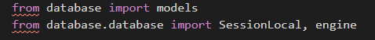
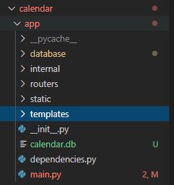

{kind=link}
אני נתקל באי יכולת לייבא כלום מתיקיית database. התוכנה מורצת מתוך תיקיית app, בה, במקביל לקובץ ההרצה ישנה את תיקיית database, ובתוכה ישנו קובץ init. למרות זאת, נסיונות לייבא מתוכו כושלים. ניסיתי במספר דרכים שונות, עד כה ללא הצלחה. הבנתי שאחרים גם נתקלו בזה
2 לייקים
{kind=link}
אז לאחר מספר ניסיונות, הבנתי שהשימוש ב- os.getenv עבור נתיב קובץ הדאטה בייס, זה מה שהקפיץ את ההודעה בצילום הקודם, מכיוון שהוא מחזיר None. אז לאחר הסרתו, ושימוש רק בסטרינג, נוצר לי דאטה בייס. מה שמוזר, שעדיין שמות התיקיות בייבואים מסומן, למרות שאם הייבוא לא היה עובד, לא היה נוצר דאטה בייס.
בנוסף, גם לאחר שנוצר קובץ הדאטה בייס, במידה ואני מחזיר את os.getenv, שוב מתקבלת אותה שגיאה, אפילו שהקובץ כבר נמצא
גם אני נתקלתי בבעיה.

הdb נוצר, ולמרות זאת השגיאה קיימת:

יש למישהו מושג למה?
והאם בכלל צריך להתחבר לdb עם metadata = sqlalchemy.MetaData() ?
לייק 1
מצטער שאני מגיע לזה רק עכשיו.
תוכל להצביע על איפה השורה הבעייתית בקוד?
האם הגדרת במשתנה הסביבה את הנתיב הרלוונטי?
תודה רבה, הסתדרתי עם זה. היתה לי טעות בהגדרת משתני הסביבה.
למרות זאת, ה- VSC עדיין מסמן לי שמות התיקיות באימפורטים, כמו בצילום, למרות שהייבוא מהן עובד. זה לא מונע ממני להמשיך, אבל זה קצת מוזר ולא ברור לי.
תוכל להסביר בבקשה מה הייתה הטעות כדי שנוכל למנוע בהמשך? (:
לייק 1
הבעיה היתה שלא הגדרתי את הכתובת לדאטהבייס כמשתנה סביבה. הפתרון היה העברתו לקובץ .env, ושימוש ב- python dot-env